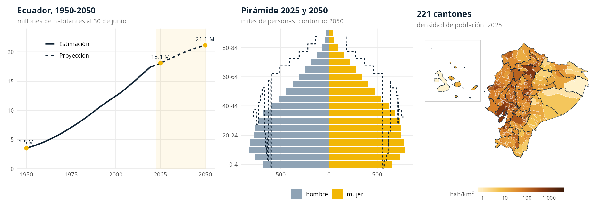
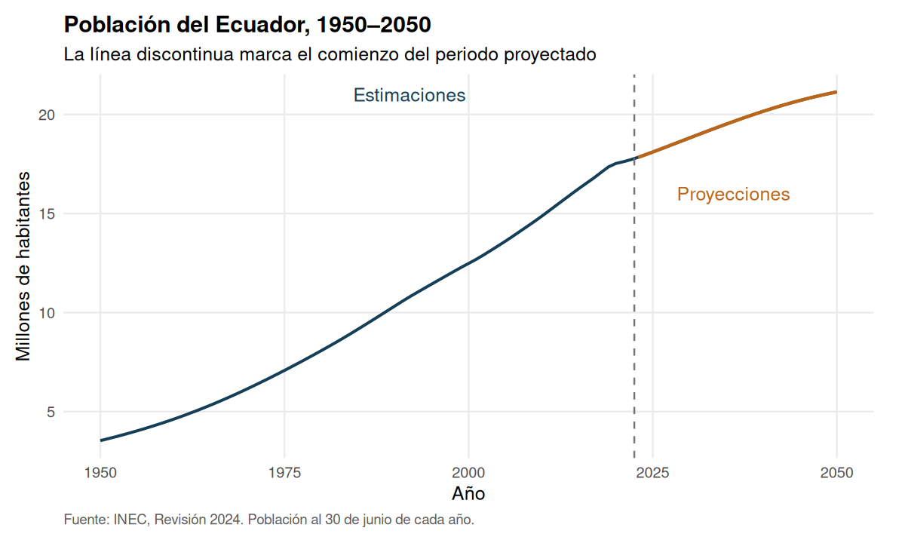
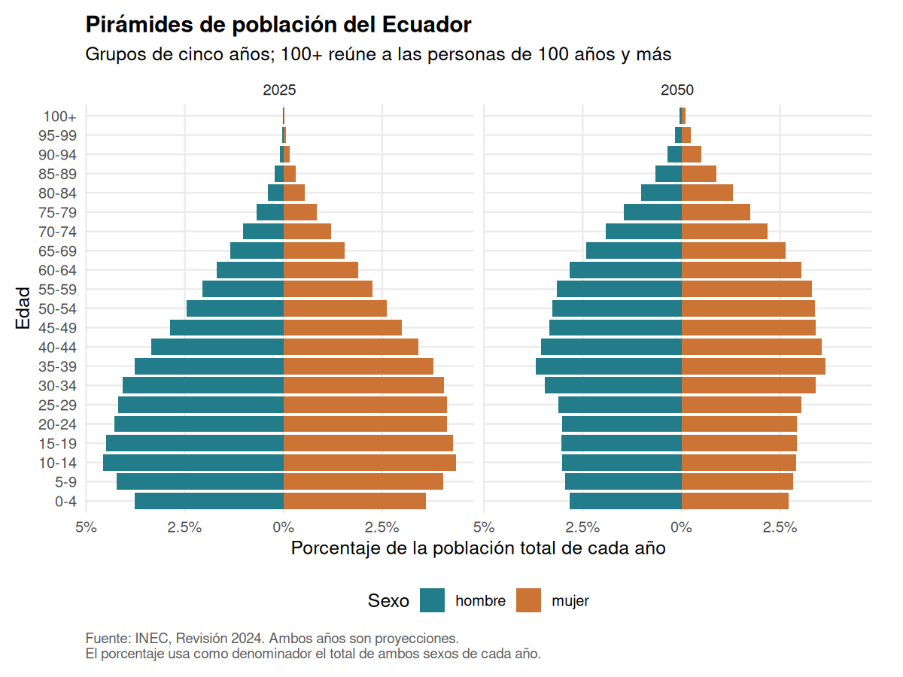
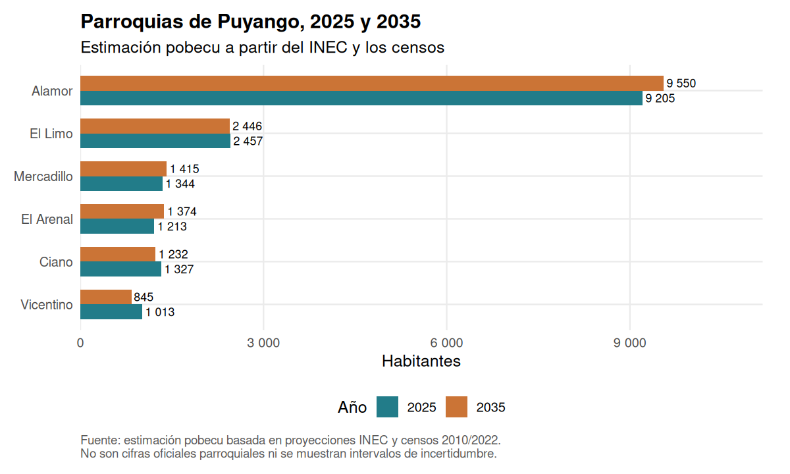
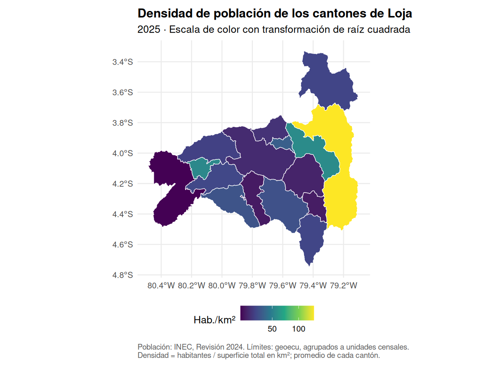
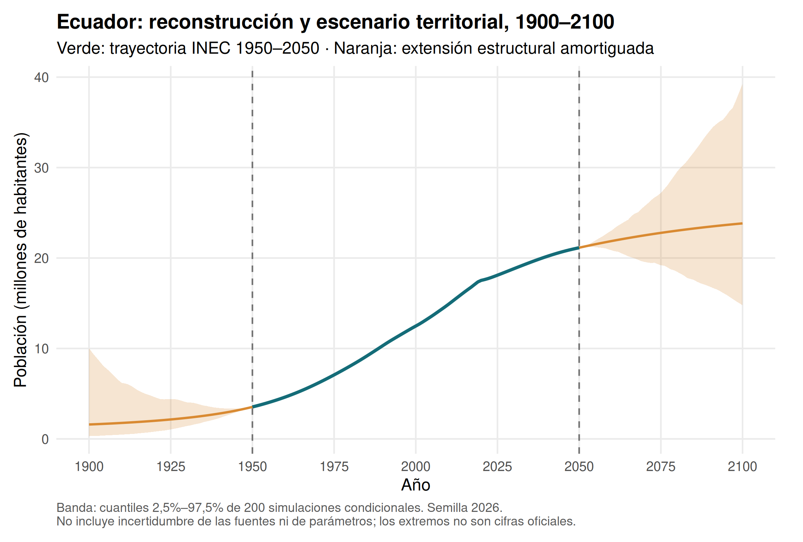

Population of Ecuador by province, canton and parish, ready to analyse in R.
Español · English


About the language. This is a shortened translation of the Spanish README, which is generated from README.Rmd and shows the real R output of every example. The package is aimed at users in Ecuador and Latin America: function names, arguments, column names, messages and the vignettes are in Spanish. See the glossary below.
pobecu provides population denominators by year, sex, age and urban/rural area of residence, identified by the codes of Ecuador’s Political-Administrative Division (DPA). Use it to compute rates and coverage indicators and to build maps together with the sister package geoecu.
This is an independent package. National, provincial and cantonal figures come from INEC (National Institute of Statistics and Censuses), Revision 2024, updated with areas in 2025. Parish figures are pobecu’s own estimates, not official INEC projections.

Coverage
| Level | Years | Age | Urban/rural | Nature |
|---|---|---|---|---|
| National | 1950–2050 | Single years or 5-year groups, up to 100+ | 2010–2035 | INEC |
| Province | 1990–2035 | Single years or 5-year groups, up to 100+ | 2010–2035 | INEC |
| Canton | 2010–2035 | Single years or 5-year groups, up to 100+ | 2010–2035 | INEC |
| Parish | 2010–2035 | 5-year groups, up to 85+ | Not available | pobecu estimate |
anio (year) refers to 30 June. Figures up to 2022 are demographic estimates; from 2023 onwards they are projections. The 2022 figures are not the census count.
Installation and first query
# Stable version, from CRAN
install.packages("pobecu")
# Development version, from GitHub
# install.packages("remotes")
# remotes::install_github("f-slg/pobecu")
# For the plots and maps in this guide
install.packages(c("ggplot2", "scales", "geoecu", "sf"))
library(pobecu)
poblacion("nacional", anio = c(2022, 2025, 2030))
pob_fuentes() # available coverageQuerying territories and years
Names are matched ignoring case and accents, and numeric codes recover their leading zeros. For repeated names (e.g. Bolívar, Olmedo) also give the province or use the DPA code.
poblacion("provincia", anio = 2025)
poblacion("canton", anio = 2025:2026, canton = "loja", sexo = TRUE)
buscar_pob("olmedo", nivel = "canton")
poblacion("canton", anio = 2025, provincia = "Loja", canton = "Olmedo")sexo = FALSE adds up men and women, edad = NULL adds up all ages and anio = NULL returns every available year.

Ages, groups and pyramids
edad |
Returns | Data needed |
|---|---|---|
NULL |
All ages combined | Included |
"quinquenal" |
0–4, 5–9, …, 100+ (parishes up to 85+) | Included |
"simple" |
0, 1, 2, …, 100 (100 means 100+) | One-time download |
"etapas" |
Life stages: 0–11, 12–17, 18–29, 30–64, 65+ | One-time download |
c(0, 5, 15, 65) |
0–4, 5–14, 15–64, 65+ | Included |
c(0, 1, 5) |
0, 1–4, 5+ | One-time download |
Breaks are the start of each group; the last group is open-ended.
poblacion("canton", anio = 2026, canton = "Loja", edad = c(0, 1, 5))
poblacion("provincia", anio = 2030, provincia = "Pichincha", edad = "etapas")
poblacion("provincia", anio = 2025, provincia = c("Guayas", "Pichincha"), area = TRUE)
Joining denominators and computing rates
The numerators below are made up for learning purposes; the denominators are INEC figures. Numerator and denominator must refer to the same territory, period, sex and age group.
casos <- data.frame(dpa_canton = c(1101, 1102, 701), anio = 2025,
casos = c(120, 8, 40))
pob_tasa(casos, "casos", por = 100000) # cases per 100,000
# Sex-specific rates: ask for the breakdown explicitly
casos_sexo <- data.frame(dpa_provin = "11", anio = 2025,
sexo = c("hombre", "mujer"), casos = c(10, 14))
pob_tasa(casos_sexo, "casos", nivel = "provincia", sexo = TRUE)
# Coverage among children under one year
vacunas <- data.frame(dpa_provin = c("01", "11"), anio = 2025,
edad = "0", vacunados = c(11800, 6900))
cobertura <- pob_unir(vacunas, nivel = "provincia", edad = "simple")
cobertura$cobertura_pct <- 100 * cobertura$vacunados / cobertura$poblacionpob_unir() adds the poblacion column; pob_tasa() also adds tasa. Both keep the original row order and codes. Unmatched codes give NA with a warning, and a zero denominator gives NA (not Inf or NaN). Do not add or average rates: add the cases and compatible denominators first.
Parishes: estimate and consistency
The package covers 1,042 units of the 2022 Census: 221 cantonal seats and 821 rural parishes (urban parishes are grouped into the cantonal seat, code suffix 50). The official cantonal projection is distributed among parishes using their shares in the 2010 and 2022 censuses (logit extrapolation), and sex and age are adjusted by iterative proportional fitting (IPF) from the 2022 census structure. Parish figures always add up exactly to the official canton total; that proves accounting consistency, not the accuracy of each parish.

Territorial codes and maps with geoecu
geoecu (≥ 0.4.0) uses the CONALI 2026 DPA, while pobecu uses 2022 Census units. Before joining cases with population, convert and aggregate the codes:
homologar_parroquia(c("010101", "010115", "010151", "131251"))
homologar_canton(c("0809", "1413"))
# Population density: geoecu boundaries grouped to census units
mapa <- pob_mapa("canton", anio = 2025, provincia = "Loja")
ggplot2::ggplot(mapa) + ggplot2::geom_sf(ggplot2::aes(fill = densidad))
Offline use
poblacion("nacional", anio = 2025, edad = "simple") # download once
pobecu_cache_dir()
pobecu_datos_disponibles()
pobecu_usar_carpeta("path/to/my_data") # or set POBECU_CARPETAAudited against the INEC spreadsheets
validacion/ contains a reproducible audit that reads the original INEC Excel files with a reader independent of the one used to build the package. More than six million cells — every single-year and five-year age group at the three official levels, sex and area totals, the 2010 and 2022 census counts of the 1,042 parishes and the parish-to-canton sums — match with zero differences.
Reconstruction and scenarios 1900–2100
pob_ajustar() and pob_estimar() extend the annual totals of the country, its 24 provinces, 221 cantons and 1,042 parish units to 1900–2100. They use damped local linear trend models (stats::StructTS, maximum likelihood) on log national totals and centred log-ratio territorial shares, a top-down hierarchical distribution that keeps every level coherent, and conditional Monte Carlo bands. Reference values are preserved exactly.
modelo <- pob_ajustar(ventana = 20, phi_total = 0.98, phi_partes = 0.95)
escenarios <- pob_estimar(nivel = "todos", anio = 1900:2100, modelo = modelo,
simulaciones = 200, semilla = 2026)
Interpretation. The 1900 end is a reconstruction on 2022 Census units, not a claim about historical jurisdictions; the 2100 end is a scenario conditional on assumptions, not an official projection or a validated forecast. Bands exclude parameter, source and territorial-change uncertainty. The full model description, sensitivity analysis and temporal validation are in the Spanish README.
Glossary
| Spanish | English |
|---|---|
poblacion() |
query population |
pob_fuentes() |
available sources and coverage |
buscar_pob() |
search the pobecu catalogue by name |
pob_unir(), pob_tasa()
|
join denominators / compute rates |
pob_mapa() |
map with population and density (needs geoecu) |
homologar_parroquia(), homologar_canton()
|
convert CONALI 2026 codes to 2022 Census units |
agrupar_unidades(), agrupar_cabeceras()
|
convert a geoecu layer to 2022 Census units |
pob_ajustar(), pob_estimar()
|
fit the scenario model / estimate 1900–2100 |
nivel = "nacional" / "provincia" / "canton" / "parroquia" |
national / province / canton / parish |
anio, sexo, edad, area
|
year, sex, age, urban/rural area |
hombre, mujer, urbana, rural
|
male, female, urban, rural |
casos, tasa, por
|
cases, rate, rate base (e.g. 100,000) |
Methodology, citation and contributing
- Methodology vignette and maps with geoecu (Spanish).
- Primary sources: INEC population estimates and projections and the 2022 Census population structure.
- Cite with
citation("pobecu"). When using parish data, state that they are pobecu estimates and also cite the INEC census and cantonal projections.
Bugs and proposals are welcome in Issues, in English or Spanish. See the contributing guide and the code of conduct. Code under the MIT licence; data from INEC publications.